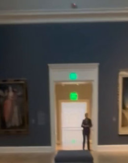
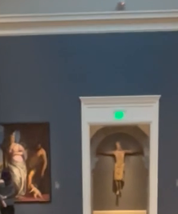
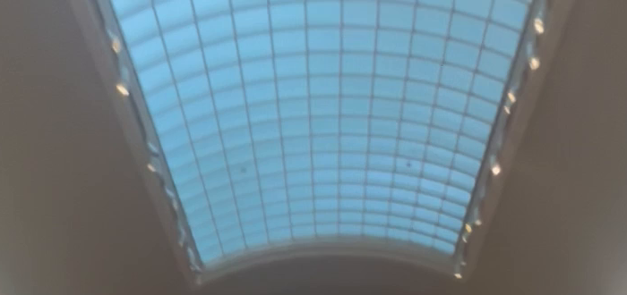
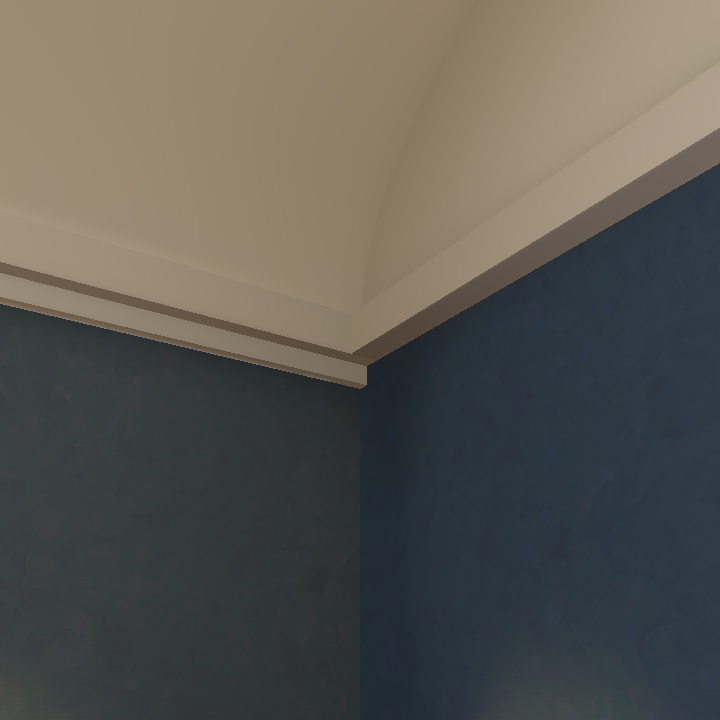
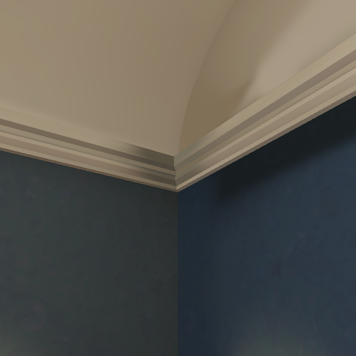
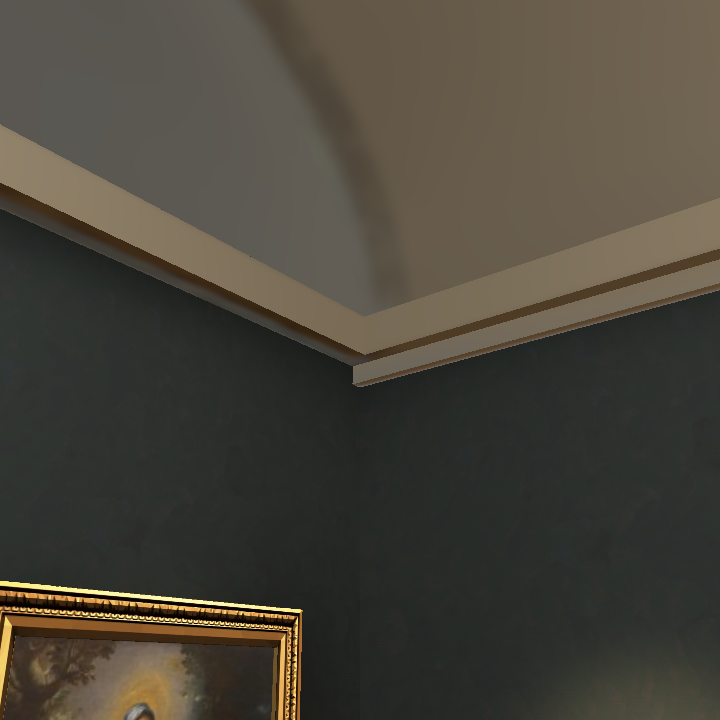
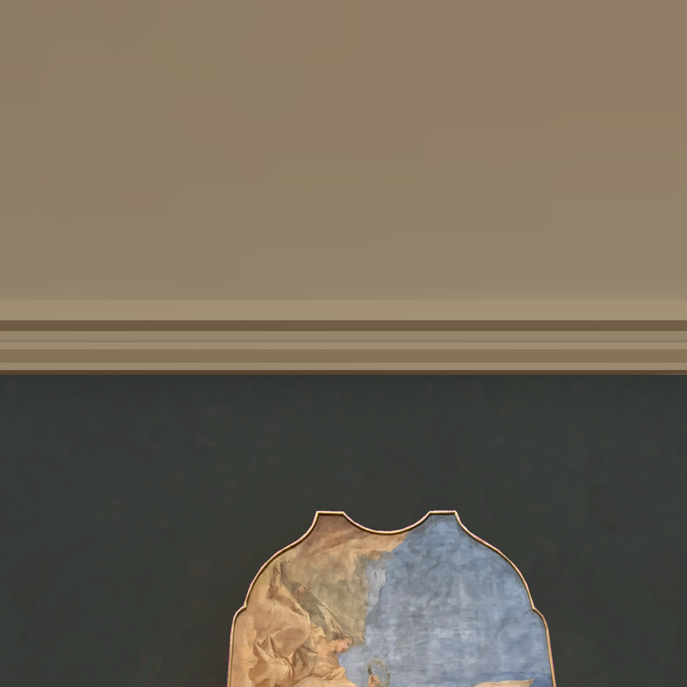
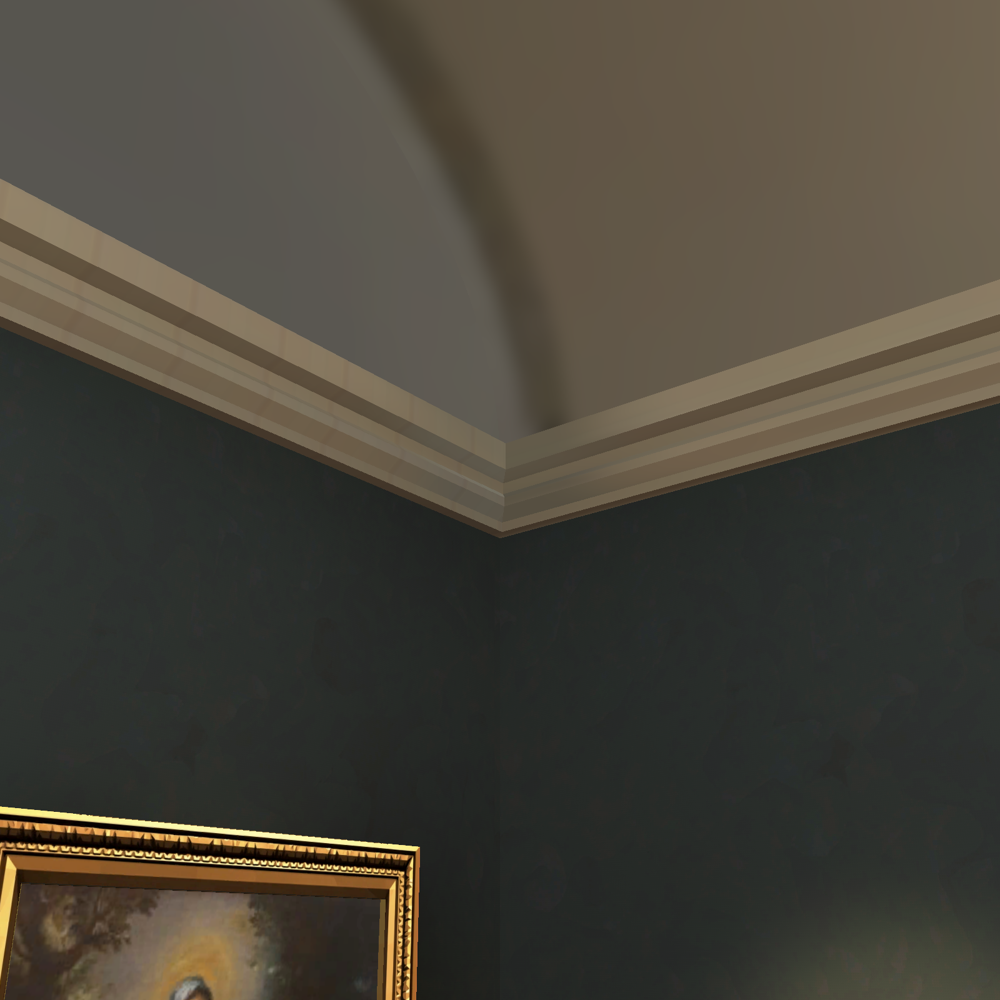

RISD cornice trial
Throwaway prototype. The repair awaits independent visual acceptance.
RISD reference crops

Far doorway
Arch doorway
SkylightBrowser comparison at 720 square

Before, far corner
Repair, far corner
Before, arch cornerRepair, arch cornerBrowser repair at 1600 square

Long wallFar corner
Arch corner